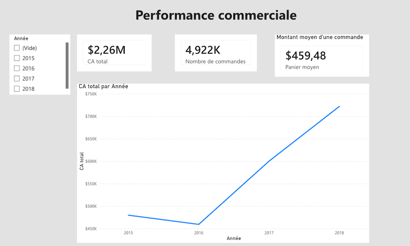
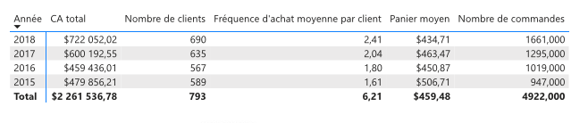

Performance Commerciale

Avec un CA global de 2,26 M$ sur la période analysée (2015-2018), on observe une forte croissance à partir de l'année 2016.
Remarque : Le jeu de données initial comportant la date de commande et la date de livraison, j'ai fait le choix de calculer le CA à partir de la date de commande.
J'ai complété mon analyse par un tableau afin d'expliquer cette hausse soudaine.

La croissance du chiffre d’affaires observée entre 2016 et 2018 est donc principalement liée à une augmentation du volume des ventes plutôt qu’à une hausse de la valeur des commandes. Le nombre de commandes est passé de 1 019 en 2016 à 1 661 en 2018, soit une hausse de 63 %, soutenu à la fois par une croissance de la clientèle (+21,7 %) et par une augmentation significative de la fréquence d’achat (+33,9 %). La valeur moyenne par commande étant demeurée relativement stable, la hausse du chiffre d’affaires s’explique essentiellement par une augmentation du nombre de transactions réalisées.